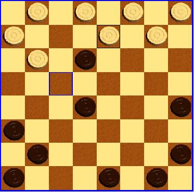
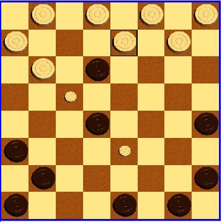

Back to Help Contents
Playing CheckersThe pieces
Moving pieces In order to move a peon or a king, click on it using the left mouse button. Please note that you can only move your peons, and only when it is your turn to move. After clicking on the peon, you will be able to see on which squares this peon can land. (Note: If one of your peons can capture an opponent peon, all your peons that cannot capture are not allowed to move.) The selected peon is marked with a black border.  In order to move the peon, click on the target square. How to make complex moves? If the selected peon or king can continue jumping from the target square it must do so. Therfore, you cannot end the move on the target square. In order to make a complex move, you will have to right-click on every square on the path. When a square is added to the path, a small peon appears on the square. To perform the move, left-click on the last sqaure in the path.  Game Status The number of pieces each player has is displayed right to the game board. Messages from the game control are displayed on the bottom. Back to Help Contents |